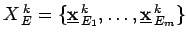
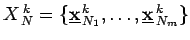
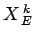
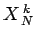
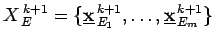

Ausgehend von einer Population von m Eltern der k-ten Generation  wird durch Rekombiantion und Mutation eine Menge von n Nachkommen  gebildet. Jeder Nachkomme wird durch eine Kombination von zwei oder mehr zufällig ausgewählten Eltern ermittelt. Aus den n +m Punkten der Mengen  und  werden die besten m Punkte für die nächste Elterngeneration  ausgewählt. Bei einigen Strategien nehmen nur die Nachkommen an der Auswahl teil. In diesem Falle können die Zielfunktionswerte der Nachkommen größer sein als die der Eltern und lokale Optima wieder verlassen werden.